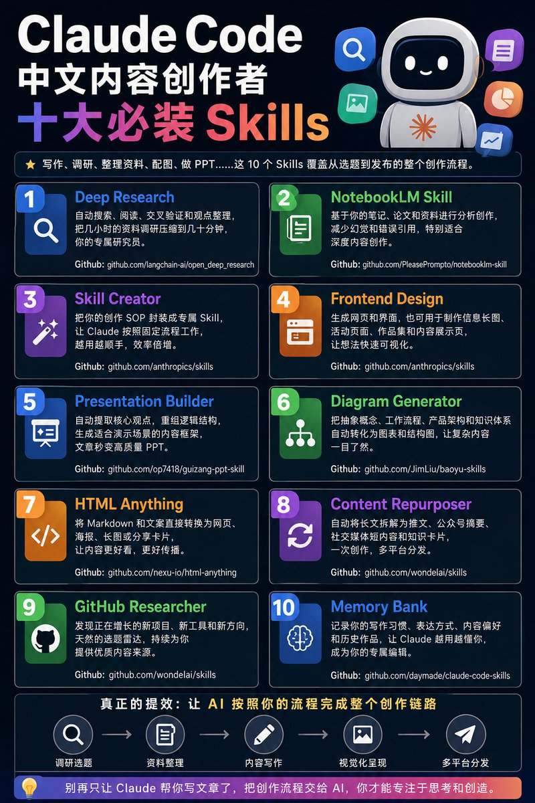

01 · Deep Research
调研 / 交叉验证
01
仓库
github.com/langchain-ai/open_deep_research
原帖定位
自动搜索、阅读、交叉验证和整理观点，把原本几个小时的资料调研压缩到几十分钟。
适合谁先装
行业分析、热点复盘、竞品研究、选题前的资料预热。
这条帖真正有价值的地方，不是“仓库列得多”，而是把 Claude Code 的能力拆成一条完整创作链路：调研、资料整理、写作、视觉化、再分发。它更像一张“先装谁、先看谁、先怎么用”的导航图。

这 10 个 Skills 的价值，不在于“数量感”，而在于它们刚好覆盖了内容创作者最耗时的五段：调研选题、知识整理、内容生成、视觉化呈现、跨平台分发。真正的提效，不是让 Claude 多写一段，而是让它把整条链路跑完。
“真正的提效，是让 AI 按照你的创作流程完成调研、整理、写作、视觉化和分发。”
可见回复里有人直接问“有没有 codex”，说明这类资源帖的用户不只想看 Claude 生态本身，而是在找“同类、可替代、可迁移”的工作流能力。换句话说，大家想要的是一套方法，不只是一个仓库名录。
github.com/langchain-ai/open_deep_research
自动搜索、阅读、交叉验证和整理观点，把原本几个小时的资料调研压缩到几十分钟。
行业分析、热点复盘、竞品研究、选题前的资料预热。
github.com/PleasePrompto/notebooklm-skill
让 Claude 基于你的笔记、论文、行业报告和个人知识库做分析与创作。
长文写作、资料密集型内容、需要减少幻觉与错误引用的场景。
github.com/anthropics/skills
把你的创作 SOP 封装成专属 Skill，让 Claude 按固定流程完成选题、整理、写作与优化。
把重复工作沉淀成稳定模板，让流程越用越顺。
github.com/anthropics/skills
把想法直接转成网页、界面、信息长图、活动页和作品集展示页。
需要可视化呈现、专题页、品牌页、活动页的内容创作者。
github.com/op7418/guizang-ppt-skill
自动提取核心观点并重组逻辑结构，生成更适合演示的内容框架。
文章转分享材料、课程课件、路演提纲和汇报 PPT。
github.com/JimLiu/baoyu-skills
把抽象概念、工作流程、产品架构和知识体系转成图表与结构图。
讲流程、讲架构、讲方法论，尤其适合复杂内容可视化。
github.com/nexu-io/html-anything
把 Markdown 和文案直接转换为网页、海报、长图和分享卡片。
内容包装、二次传播、快速生成可发布成品。
github.com/wondelai/skills
把一篇长文拆成推文、公众号摘要、短内容和知识卡片。
一次创作，多平台分发，放大曝光与传播。
github.com/wondelai/skills
从 GitHub 里找正在增长的新项目、新工具和新方向。
把 GitHub 变成持续输出选题的来源池。
github.com/daymade/claude-code-skills
持续记录写作习惯、表达方式、内容偏好和历史作品，让 Claude 越用越懂你。
长期项目、连续输出、需要稳定风格和上下文连续性的场景。